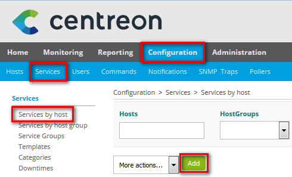
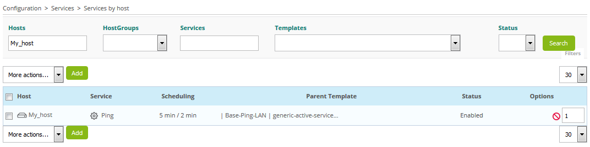
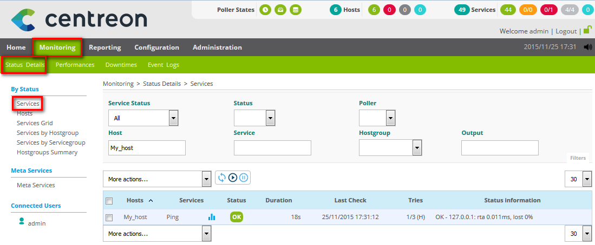

Adicionar um Serviço¶
Você já tem um host adicionado e agora você precisa monitorar alguns indicadores.
Note
Um indicador tem a nomeclatura service no Centreon.
Vá para o menu Configuration > Services > Services by host e clique no botão Add:
Para adicionar um serviço em um host, você tem que definir somente três campos:
- Selecione o host no campo Linked with Hosts
- Defina o nome do serviço no campo Description
- Selecione um template pré-definido de serviço, por exemplo Base-Ping-LAN, no campo Service Template
Note
Após selecionar um template de serviço, um novo campo aparecerá. Os valores descrevem os argumentos para usar no monitoramento do seu serviço. Na maioria dos casos são limites para alerta. Você pode utilizar esses valores padrões ou substitui-los para os seus.
Salve as modificações clicando no botão Save.
O serviço agora esta definido na sua interface Centreon web, porém o motor de monitoramento não esta monitorando ainda!
Você deve agora gerar a configuração, exportar e enviar para o motor de monitoramento (poller).
Você pode ver o resultado no menu Monitoring > Status Details > Services:
